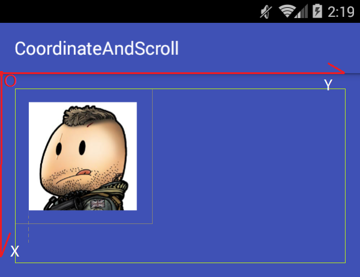
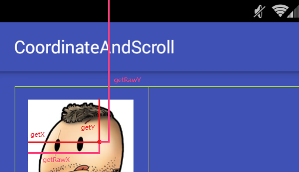
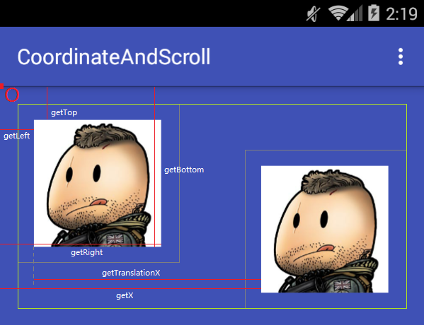
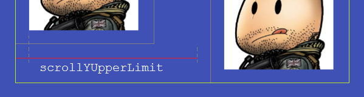
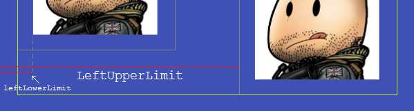
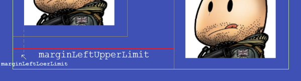
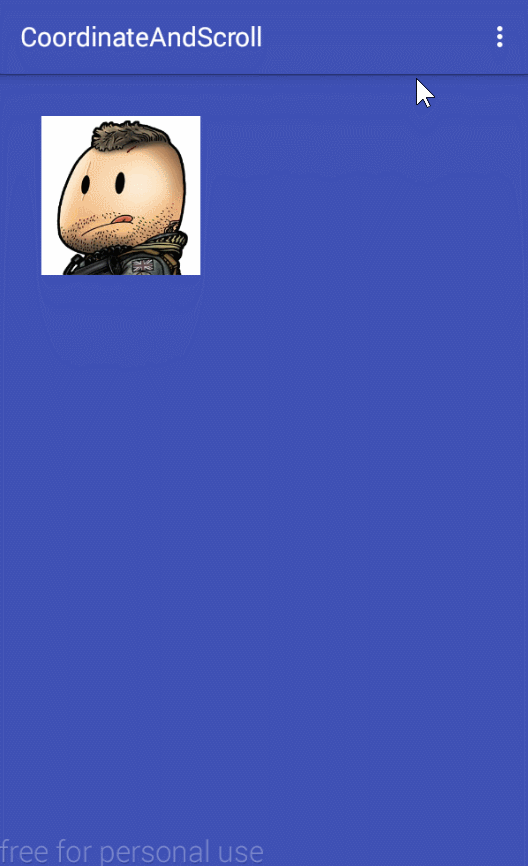

Android 二维坐标系 和 Java 图形化界面开发类似，Android 中也有一种坐标系，这里说说二维平面的坐标系，在 Android 中，坐标系起始点以左上角为原点，竖直向下是 y 轴的方向，横向向右是 x 轴延伸方向，对于 Android 中的 View 来说，它本身所具有的一些位置相关的参数会根据这个坐标系来确定数值和正负，掌握这些有助于理解 View 在布局层次中所处位置的意义。
下面用一个典型例子来说明 Android 中的坐标系：

上图中的布局包含两个 View，一个是外层的 parent view 和内部的一个 child view，其中 parent view 设置了 padding="16dp" 的属性，child view 设置了 layout_margin="16dp" 的属性，为了更明显的表现布局的，其中绿色区域表示 parent view 设置 padding 后绘制子 View 的区域，灰色区域表示 child view 设置 margin 值后所占的空间。
1 2 3 4 5 6 7 8 9 10 11 12 13 14 15 16 17 18 19 20 21 <com.runing.corrdinateandscroll.ScrollerLayout xmlns:android ="http://schemas.android.com/apk/res/android" xmlns:tools ="http://schemas.android.com/tools" android:id ="@+id/fl_parent" android:layout_width ="match_parent" android:layout_height ="240dp" android:background ="@color/colorPrimary" android:padding ="16dp" tools:context ="com.runing.corrdinateandscroll.MainActivity" > 2 <ImageView android:id ="@+id/iv_target" android:layout_width ="120dp" android:layout_height ="120dp" android:layout_margin ="16dp" android:contentDescription ="@string/app_name" android:src ="@drawable/img0" /> </com.runing.corrdinateandscroll.ScrollerLayout >
下面分主要从和几个角度分析和 child view 相关的坐标参数
Parent View 下面两个方法都是对 child view 调用的，他们返回的是两个重要位置参数的值，mScrollX 和 mScrollY
getScrollX 返回相对于 View 左边缘 x 轴滑动的偏移量，它会影响 View 内容的绘制位置，如果向右偏移，返回的都是负值，反之返回正值，下面会细说它的含义。getScrollY 返回相对于 View 上边缘 y 轴滑动的偏移量，如果向下偏移，返回的都是负值，反之返回正值。
Motion Event 现在假设在 child view 上发生一个触摸事件，下面的这些方法将会从 child view 的 onTouchEvent(MotionEvent event) 或者 onTouchListener 的 onTouch(MotionEvent event) 方法中的 event 对象中获取值。

getRawX 触摸事件发生点相对屏幕左边缘的 x 轴偏移，因为触点一定会在屏幕内，所以一直是正值。getRawY 触摸事件发生点相对屏幕上边缘的 y 轴偏移，同上一直会是正值。getX child view 触摸事件发生点相对自身左边缘的 x 轴偏移，如果触点在自身左边缘的左边，值会为负。getY child view 触摸事件发生点相对自身上边缘的 y 轴偏移，如果触点在自身上边缘的上面，值会为负。
Child View 下图是一个 View 调用 setTranslation 的方法使 View 发生偏移前后的两个 View 的位置。

下以的方法均是针对 child view 来说的。
getLeft child view 左边缘距离 parent view 左边缘的 x 轴偏移量，相对于 parent view 右边时为正数。由图上看出，getLeft 的值会受到 parent view 的 padding 和 child view 自身的 layout_margin 属性的影响。getTop child view 上边缘距离 parent view 上边缘的 y 轴偏移量，相对于 parent view 偏下时为正数，getTop 的值会受到 parent view 的 padding 和 child view 自身的 layout_margin 属性的影响。getRight child view 右边缘距离 parent view 左边缘的 x 轴偏移量，即 getLeft 加view自身宽度。getBottom child view 下边缘距离 parent view 上边缘的 y 轴偏移量，即 getRight 加view自身高度。getTranslationX child view 相于自身 getLeft 向右的 x 轴偏移量，改变这个值不会改变 getLeft 的值。getTranslationY child view 相于自身 getTop 向下的 y 轴偏移量，改变这个值不会改变 getTop 的值。getX child view 发生 translationX 平移后的自身左边缘距离 parent view 左边缘的 x 轴偏移，即 getLeft + getTranslationX 。getY child view 发生 translationY 平移后的自身左边缘距离 parent view 左边缘的 y 轴偏移，即 getTop + getTranslationY 。
上面只是简单列举了 Android 中与 View 中坐标相关的一些属性，下面将介绍 View 滑动的几种方法，了解上面这些有助于理解 View 滑动的一些原理，下面将会把这些知识融入到 View 滑动的实例中去。
View 滑动方法 下面通过一个实例的实现来介绍 5 种 View 的滑动方法，并用这些方法实现相同需求的 View 滑动示例。
拖拽滑动实例 首先确定实例需求，基于上面的条件来确定一些需求，并依次递进实现每一个需求：
一个 ViewGroup 中放置一个 ImageView
其中可以使用手指触摸和拖动其中的ImageView，并让其跟随触摸点自由移动。
在拖动过程中需要保证ImageView只能在ViewGroup的范围内滑动，并保持ViewGroup设置的 padding 属性和ImageView设置的 layout_margin 属性依然有效。
模拟悬浮窗的横向吸附效果，当松手时，如果ImageView偏左，则ImageView会平滑吸附到ViewGroup的左边缘，反之吸附到右边缘。
针对以上需求，使用以下 5 种方法一一实现，其中第 4 个需求属于弹性滑动也就是平滑滚动，这里先实现上面 3 种需求。
现在在外部对 ImageView 设置 OnTouchListener 来监听它的触摸事件，使用两个变量来标记手指按下的坐标，在手指移动时即可计算平移的偏移量，注意 onTouch 返回 true 来消耗事件，其中计算的偏移量将作为滑动的基础数值，对于每种滑动都会针对这个偏移值进行处理。
1 2 3 4 5 6 7 8 9 10 11 12 13 14 15 16 17 18 19 20 21 22 private int mLastX;private int mLastY;mTarget.setOnTouchListener(new View.OnTouchListener() { @Override public boolean onTouch (View v, MotionEvent event) final int x = (int ) event.getX(); final int y = (int ) event.getY(); switch (event.getActionMasked()) { case MotionEvent.ACTION_DOWN: mLastX = x; mLastY = y; break ; case MotionEvent.ACTION_MOVE: int xOffset = x - mLastX; int yOffset = y - mLastY; break ; } return true ; } });
Translation 使用 View 的 setTranslationX 和 setTranslationY 方法可直接使 View 发生平移，所以让 View 根据偏移滑动可以这样写，其中累加 getTranslation 的结果是为了基于当前位置滑动，而不是从头开始：
1 2 3 4 private void scrollByOffset (int xOffset, int yOffset) mTarget.setTranslationX(mTarget.getTranslationX() + xOffset); mTarget.setTranslationY(mTarget.getTranslationY() + yOffset); }
这样 View 就会跟随手指滑动了，接下来开始限制 View 滑动范围，逻辑就是先计算出 translation 在 x 轴和 y 轴的滑动上限和下限，再判断新的 translation 位置否超出限制，如果超出限制，则重新设置原始偏移值在范围内。
这里由于初始位置的 translationX 和 translationY 都为 0，则他们的下限就是 0
1 2 final int transXLowerLimit = 0 ;final int transYLowerLimit = 0 ;
假设 View 已经通过 translation 滑动到右下角边缘，现在可以计算出上限了。
从图上简单分析，很容易就能计算了：
1 2 3 final int transXUpperLimit = mParentW - mTargetW - mParentPL - mParentPR - mTargetML - mTargetMR;final int transYUpperLimit = mParentH - mTargetH - mParentPT - mParentPB - mTargetMT - mTargetMB;
那么根据这四个变量值即可限制 translation 的变化，下面是完整代码：
1 2 3 4 5 6 7 8 9 10 11 12 13 14 15 16 17 18 19 20 21 22 23 24 25 26 27 28 29 30 31 32 33 34 35 36 37 38 39 40 41 42 43 44 45 46 47 48 private void startScrollWithTranslation () mTarget.setOnTouchListener(new View.OnTouchListener() { @Override public boolean onTouch (View v, MotionEvent event) final int x = (int ) event.getX(); final int y = (int ) event.getY(); switch (event.getActionMasked()) { case MotionEvent.ACTION_DOWN: stopAllAnimAndThread(); mLastX = x; mLastY = y; break ; case MotionEvent.ACTION_MOVE: int xOffset = x - mLastX; int yOffset = y - mLastY; final int oldTransX = (int ) mTarget.getTranslationX(); final int newTransX = oldTransX + xOffset; final int transXLowerLimit = 0 ; if (newTransX < transXLowerLimit) { xOffset = transXLowerLimit - oldTransX; } final int transXUpperLimit = mParentW - mTargetW - mParentPL - mParentPR - mTargetML - mTargetMR; if (newTransX > transXUpperLimit) { xOffset = transXUpperLimit - oldTransX; } final int oldTransY = (int ) mTarget.getTranslationY(); final int newTransY = oldTransY + yOffset; final int transYLowerLimit = 0 ; if (newTransY < transYLowerLimit) { yOffset = transYLowerLimit - oldTransY; } final int transYUpperLimit = mParentH - mTargetH - mParentPT - mParentPB - mTargetMT - mTargetMB; if (newTransY > transYUpperLimit) { yOffset = transYUpperLimit - oldTransY; } scrollByOffset(xOffset, yOffset); break ; } return true ; } }); }
这样就完成了第一种方法了。
scrollTo 和 scrollBy 可以对 View 的绘制内容进行滑动，实质上是对 Canvas 绘制区域的滚动。下面是 View 的 draw(Canvas canvas) 的部分源码，可以体现 scrollTo 方法对绘制的影响。
1 2 3 4 5 6 7 8 9 10 11 12 13 14 15 16 17 18 19 20 21 int left = mScrollX + paddingLeft;int right = left + mRight - mLeft - mPaddingRight - paddingLeft;int top = mScrollY + getFadeTop(offsetRequired);int bottom = top + getFadeHeight(offsetRequired);... if (solidColor == 0 ) { final int flags = Canvas.HAS_ALPHA_LAYER_SAVE_FLAG; if (drawTop) { canvas.saveLayer(left, top, right, top + length, null , flags); } ... } ... if (drawTop) { matrix.setScale(1 , fadeHeight * topFadeStrength); matrix.postTranslate(left, top); fade.setLocalMatrix(matrix); p.setShader(fade); canvas.drawRect(left, top, right, top + length, p); }
其中的 mScrollX 和 mScrollY 的值，会受到 scrollTo 的影响而发生改变
1 2 3 4 5 6 7 8 9 10 11 12 13 14 15 16 17 18 19 20 public void scrollTo (int x, int y) if (mScrollX != x || mScrollY != y) { int oldX = mScrollX; int oldY = mScrollY; mScrollX = x; mScrollY = y; invalidateParentCaches(); onScrollChanged(mScrollX, mScrollY, oldX, oldY); if (!awakenScrollBars()) { postInvalidateOnAnimation(); } } }
scollBy 帮我们处理了相对当前位置滑动的问题。
1 2 3 4 5 6 7 8 9 10 public void scrollBy (int x, int y) scrollTo(mScrollX + x, mScrollY + y); }
这里需要让 ImageView 滑动，就是调用 parent view 的 scrollBy 方法，来进行内容的滑动，但是有一个弊端是，parent view内部的所有子 View 都会滑动，这里只不过这里只有一个 child view，而且 scrollTo 并不只限制于ViewGroup，还可以对View进行内容的滑动，比如ImageView中可对内部的图片进行滑动，如果扩展一下，就可以做出一个图片浏览控件。
下面根据之前 translation 的套路，还是先实现自由滚动，上代码：
1 2 3 private void scrollByOffset (int xOffset, int yOffset) mParent.scrollBy(-xOffset, -yOffset); }
由于 scroll 和坐标系方向是相反的，所以这里为负值。接下来计算上限和下限。
下限默认是 0，上限也和之前 translation 的计算结果是相同的。

1 2 3 4 final int scrollXLowerLimit = 0 ;final int scrollYLowerLimit = 0 ;final int scrollXUpperLimit = mParentW - mTargetW - mParentPL - mParentPR - mTargetML - mTargetMR;final int scrollYUpperLimit = mParentH - mTargetH - mParentPT - mParentPB - mTargetMT - mTargetMB;
得到最终偏移值的完整代码：
1 2 3 4 5 6 7 8 9 10 11 12 13 14 15 16 17 18 19 20 21 22 23 24 25 26 27 28 29 30 31 32 33 34 35 36 37 38 39 40 41 42 43 44 45 private void startScrollWithScrollTo () mTarget.setOnTouchListener(new View.OnTouchListener() { @Override public boolean onTouch (View v, MotionEvent event) final int x = (int ) event.getX(); final int y = (int ) event.getY(); switch (event.getActionMasked()) { case MotionEvent.ACTION_DOWN: mLastX = x; mLastY = y; break ; case MotionEvent.ACTION_MOVE: int xOffset = x - mLastX; int yOffset = y - mLastY; final int oldScrollX = -mParent.getScrollX(); final int newScrollX = oldScrollX + xOffset; final int scrollXLowerLimit = 0 ; if (newScrollX < scrollXLowerLimit) { xOffset = scrollXLowerLimit - oldScrollX; } final int scrollXUpperLimit = mParentW - mTargetW - mParentPL - mParentPR - mTargetML - mTargetMR; if (newScrollX > scrollXUpperLimit) { xOffset = scrollXUpperLimit - oldScrollX; } final int oldScrollY = -mParent.getScrollY(); final int newScrollY = oldScrollY + yOffset; final int scrollYLowerLimit = 0 ; if (newScrollY < scrollXLowerLimit) { yOffset = scrollYLowerLimit - oldScrollY; } final int scrollYUpperLimit = mParentH - mTargetH - mParentPT - mParentPB - mTargetMT - mTargetMB; if (newScrollY > scrollYUpperLimit) { yOffset = scrollYUpperLimit - oldScrollY; } scrollByOffset(xOffset, yOffset); break ; } return true ; } }); }
Layout Fun 使用 layout 方法对目标 View 进行重新布局，也可以做到对 View 的滑动，那么对于针对偏移的滑动就可以这样写：
1 2 3 4 private void scrollByOffset (int xOffset, int yOffset) mTarget.layout(mTarget.getLeft() + xOffset, mTarget.getTop() + yOffset, mTarget.getRight() + xOffset, mTarget.getBottom() + yOffset); }
注意这种方法只是在滑动时临时改变 View 的 mLeft,mRight,mTop,mBottom 属性，如果 View 重新调用 requesstLayout 方法请求布局的重绘，View 将会重新回到初始位置，可以提前保存 View 的位置。
接下来是计算 layout 绘制的上下限：

可以看出，View 的 getLeft 是有初始值的，同理 getTop 也是一样，那么这就是它们的下限。
1 2 3 final int leftLowerLimit = mParentPL + mTargetML;final int topLowerLimit = mParentPT + mTargetMT;
那么上限就是：
1 2 final int leftUpperLimit = mParentW - mTargetW - mParentPR - mTargetMR;final int topUpperLimit = mParentH - mTargetH - mParentPB - mTargetMB;
由此可以限制偏移值了，完整代码：
1 2 3 4 5 6 7 8 9 10 11 12 13 14 15 16 17 18 19 20 21 22 23 24 25 26 27 28 29 30 31 32 33 34 35 36 37 38 39 40 41 42 43 44 45 private void startScrollWithOffsetFun () mTarget.setOnTouchListener(new View.OnTouchListener() { @Override public boolean onTouch (View v, MotionEvent event) final int x = (int ) event.getX(); final int y = (int ) event.getY(); switch (event.getActionMasked()) { case MotionEvent.ACTION_DOWN: stopAllAnimAndThread(); mLastX = x; mLastY = y; break ; case MotionEvent.ACTION_MOVE: int xOffset = x - mLastX; int yOffset = y - mLastY; final int oldLeft = mTarget.getLeft(); final int newLeft = oldLeft + xOffset; final int leftLowerLimit = mParentPL + mTargetML; if (newLeft < leftLowerLimit) { xOffset = leftLowerLimit - oldLeft; } final int leftUpperLimit = mParentW - mTargetW - mParentPR - mTargetMR; if (newLeft > leftUpperLimit) { xOffset = leftUpperLimit - oldLeft; } final int oldTop = mTarget.getTop(); final int newTop = oldTop + yOffset; final int topLowerLimit = mParentPT + mTargetMT; if (newTop < topLowerLimit) { yOffset = topLowerLimit - oldTop; } final int topUpperLimit = mParentH - mTargetH - mParentPB - mTargetMB; if (newTop > topUpperLimit) { yOffset = topUpperLimit - oldTop; } scrollByOffset(xOffset, yOffset); break ; } return true ; } }); }
offsetXXAndXX 使用 offsetLeftAndRight 和 offsetTopAndBottom 两种方法可以直接对 View 进行滑动，使用这两种方法和 layout 相同，只不过更方便一些，直接传入偏移值即可使 View 滑动，经过测试，它和调用 layout 方法所照成的影响一致，都会使 mLeft,mRight,mTop,mBottom 发生变化，当 View 调用 requestLayout 后，View 依然会回到原始位置。
那么直接就直接使用吧：
1 2 mTarget.offsetLeftAndRight(xOffset); mTarget.offsetTopAndBottom(yOffset);
既然和 layout 方法一样，那么对边界限制的代码也是一模一样，这里就不用写了，和 layout 是一样的。
在 Android 中存在一个 View 拖动的辅助类 ViewDragHelper ，使用它可以很方便的对 View 进行拖拽和边界限制，这里就不说了，其内部滑动就是调用了 offsetXXAndXX 系列方法，下面是它内部的一个方法：
1 2 3 4 5 6 7 8 9 10 11 12 13 14 15 16 17 18 19 20 21 private void dragTo (int left, int top, int dx, int dy) int clampedX = left; int clampedY = top; final int oldLeft = mCapturedView.getLeft(); final int oldTop = mCapturedView.getTop(); if (dx != 0 ) { clampedX = mCallback.clampViewPositionHorizontal(mCapturedView, left, dx); ViewCompat.offsetLeftAndRight(mCapturedView, clampedX - oldLeft); } if (dy != 0 ) { clampedY = mCallback.clampViewPositionVertical(mCapturedView, top, dy); ViewCompat.offsetTopAndBottom(mCapturedView, clampedY - oldTop); } if (dx != 0 || dy != 0 ) { final int clampedDx = clampedX - oldLeft; final int clampedDy = clampedY - oldTop; mCallback.onViewPositionChanged(mCapturedView, clampedX, clampedY, clampedDx, clampedDy); } }
Layout Params 使用 LayoutParams 就有很灵活了，它是作为 View 的布局参数映射类而存在的，最先想到的就的是动态更改 View 设置的 layout_margin 属性，即可做到 View 位置的更改，也就能控制 View 的滑动了，不过必须在支持 layout_margin 的父布局中才可以使用，相对于父布局来说，只要是支持 View 位置的属性，都可以拿来用，并不限制于 layout_margin 参数。
下面，我们在 FrameLayout 里面进行滑动，那么可以这样来：
1 2 3 4 5 6 private void scrollByOffset (int xOffset, int yOffset) FrameLayout.LayoutParams params = (FrameLayout.LayoutParams) mTarget.getLayoutParams(); params.leftMargin += xOffset; params.topMargin += yOffset; mTarget.setLayoutParams(params); }
处理上下限也很好弄了。

下限不用说，就是 marginLeft 和 marginTop 的初始值：
1 2 final int marginLeftLowerLimit = mTargetML;final int marginTopLowerLimit = mTargetMT;
上限从图上分析也很容易计算：
1 2 final int marginLeftUpperLimit = mParentW - mTargetW - mParentPL - mParentPR - mTargetMR;final int marginTopUpperLimit = mParentH - mTargetH - mParentPT - mParentPB - mTargetMB;
那么完整的就是：
1 2 3 4 5 6 7 8 9 10 11 12 13 14 15 16 17 18 19 20 21 22 23 24 25 26 27 28 29 30 31 32 33 34 35 36 37 38 39 40 41 42 43 44 45 46 private void startScrollWithLayoutParams () mTarget.setOnTouchListener(new View.OnTouchListener() { @Override public boolean onTouch (View v, MotionEvent event) final int x = (int ) event.getX(); final int y = (int ) event.getY(); switch (event.getActionMasked()) { case MotionEvent.ACTION_DOWN: stopAllAnimAndThread(); mLastX = x; mLastY = y; break ; case MotionEvent.ACTION_MOVE: int xOffset = x - mLastX; int yOffset = y - mLastY; FrameLayout.LayoutParams params = (FrameLayout.LayoutParams) mTarget.getLayoutParams(); final int oldMarginLeft = params.leftMargin; final int newMarginLeft = oldMarginLeft + xOffset; final int marginLeftLowerLimit = mTargetML; if (newMarginLeft < marginLeftLowerLimit) { xOffset = marginLeftLowerLimit - oldMarginLeft; } final int marginLeftUpperLimit = mParentW - mTargetW - mParentPL - mParentPR - mTargetMR; if (newMarginLeft > marginLeftUpperLimit) { xOffset = marginLeftUpperLimit - oldMarginLeft; } final int oldMarginTop = params.topMargin; final int newMarginTop = oldMarginTop + yOffset; final int marginTopLowerLimit = mTargetMT; if (newMarginTop < marginLeftLowerLimit) { yOffset = marginTopLowerLimit - oldMarginTop; } final int marginTopUpperLimit = mParentH - mTargetH - mParentPT - mParentPB - mTargetMB; if (newMarginTop > marginTopUpperLimit) { yOffset = marginTopUpperLimit - oldMarginTop; } scrollByOffset(xOffset, yOffset); break ; } return true ; } }); }
那么最终就可以达到这样的效果：

其中的信息输出是一个 Toast ，可以在 move 事件中加入。
1 2 3 4 5 6 7 ... case MotionEvent.ACTION_MOVE: ... scrollByOffset(xOffset, yOffset); printViewInfo(event, xOffset, yOffset); break ;
1 2 3 4 5 6 7 8 9 10 11 12 13 14 15 16 17 18 19 20 21 22 23 24 25 26 27 28 29 30 31 32 33 34 35 36 37 38 39 40 41 42 43 44 45 46 47 48 49 50 51 52 53 54 55 56 57 58 59 60 61 62 63 64 65 66 67 68 69 70 71 72 73 74 75 76 77 78 79 80 81 private void printViewInfo (MotionEvent event, final int xOffset, final int yOffset) T.show( getOutPutString( mParent.getScrollX(), mParent.getScrollY(), (int ) event.getX(), (int ) event.getY(), (int ) event.getRawX(), (int ) event.getRawY(), xOffset, yOffset, mTarget.getWidth(), mTarget.getHeight(), (int ) mTarget.getX(), (int ) mTarget.getY(), mTarget.getScrollX(), mTarget.getScrollY(), (int ) mTarget.getTranslationX(), (int ) mTarget.getTranslationY(), mTarget.getLeft(), mTarget.getRight(), mTarget.getTop(), mTarget.getBottom() ) ); } private static String getOutPutString (int pScrollX, int pScrollY, int mGetX, int mGetY, int mGetRawX, int mGetRawY, int mOffsetX, int mOffsetY, int tWidth, int tHeight, int tGetX, int tGetY, int tScrollX, int tScrollY, int tTranslationX, int tTranslationY, int tLeft, int tRight, int tTop, int tBottom) return "Parent: {" + "\nscrollX: " + pScrollX + "\nscrollY: " + pScrollY + "\n}\n" + "MotionEvent: {" + "\n" + "getX: " + mGetX + "\ngetY: " + mGetY + "\ngetRawX: " + mGetRawX + "\ngetRawY: " + mGetRawY + "\noffsetX: " + mOffsetX + "\noffsetY:" + mOffsetY + "\n}\n" + "TargetView: {" + "\nwidth: " + tWidth + "\nheight: " + tHeight + "\ngetX: " + tGetX + "\ngetY: " + tGetY + "\ngetScrollX: " + tScrollX + "\ngetScrollY: " + tScrollY + "\ngetTranslationX: " + tTranslationX + "\ngetTranslationY: " + tTranslationY + "\ngetLeft: " + tLeft + "\ngetRight: " + tRight + "\ngetTop: " + tTop + "\ngetBottom: " + tBottom + "\n}" ; }
1 2 3 4 5 6 7 8 9 10 11 12 13 14 15 16 17 18 19 20 21 22 23 24 25 public final class T private static Toast sToast; @SuppressLint("ShowToast") public static void init (Context context) sToast = Toast.makeText(context, "" , Toast.LENGTH_SHORT); TextView view = new TextView(context); view.setTextColor(Color.BLACK); view.setLayoutParams( new ViewGroup.LayoutParams( ViewGroup.LayoutParams.WRAP_CONTENT, ViewGroup.LayoutParams.WRAP_CONTENT ) ); sToast.setView(view); } public static void show (String text) ((TextView)sToast.getView()).setText(text); sToast.setDuration(Toast.LENGTH_SHORT); sToast.show(); } }
弹性滑动 上面介绍了 View 的滑动方法，也实现了实例中的前 3 个需求，但这些都只是被动的被控制的滑动，那么怎么让它自动滑动呢，就是自动从一个地方平滑到另一个地方，那么针对以上的 5 中方法，每种都有对应的处理方式，现在就有了以下三个方法，这些方法将被用来实现第4个需求：模拟悬浮窗的横向吸附效果，当松手时，如果ImageView偏左，则ImageView会平滑吸附到ViewGroup的左边缘，反之吸附到右边缘。
Animator 首先就想到了属性动画，它会使用内部线程自动更新 View 的属性，再通过 View 的重绘，使 View 的形态发生变化，平常都很常用的就是平移、缩放、旋转动画，其中平移动画就是更新的 translationX 和 translationY 两种属性，那么很自然的就把滑动方法中的 translation 给搞定了，当然还可以使用动画更新自定的属性，好的，现在来着手实现自动吸附吧，首先就想到是在 View 的触摸事件中的 ACTION_UP 事件中判断 View 的当前位置，看它偏左还是偏右，如果偏左，就让它向左平滑滑向下限位置也就是初始位置，否则向右滑向上限位置，然后在开始具体的不同方法的平滑滚动。下面是使用属性动画的两种解决方案，
使用 ObjectAnimator 更新 translationX 属性实现平滑滚动。
属性动画实例化：
1 2 mTransAnimator = ObjectAnimator.ofFloat(mTarget, "translationX" , 0 , 0 );
处理 ACTION_UP 事件
1 2 3 4 5 6 7 8 9 10 11 12 13 14 15 16 17 18 19 20 21 22 23 24 25 private void scrollToSideWithTranslation () final int transXLimit = mParentW - mParentPL - mParentPR - mTargetMR - mTargetML - mTargetW; final int transXHalfLimit = transXLimit / 2 ; final float translationX = mTarget.getTranslationX(); if (translationX == 0 || translationX == transXLimit) { return ; } if (translationX < transXHalfLimit) { mTransAnimator.setDuration((long ) (SPEED_A_PIXEL * translationX)); mTransAnimator.setFloatValues(translationX, 0 ); } else { mTransAnimator.setDuration((long ) (SPEED_A_PIXEL * (transXLimit - translationX))); mTransAnimator.setFloatValues(translationX, transXLimit); } mTransAnimator.start(); }
使用 ValueAnimator 自定义更新 LayoutParams 中 margin 属性实现平滑滚动。
初始化动画：
1 2 3 4 5 6 7 8 9 10 11 12 mLayoutParamsAnimator = ValueAnimator.ofInt(0 ); mLayoutParamsAnimator.addUpdateListener(new ValueAnimator.AnimatorUpdateListener() { @Override public void onAnimationUpdate (ValueAnimator animation) final int marginLeft = (int ) animation.getAnimatedValue(); FrameLayout.LayoutParams params = (FrameLayout.LayoutParams) mTarget.getLayoutParams(); params.leftMargin = marginLeft; mTarget.setLayoutParams(params); } });
实现吸附：
1 2 3 4 5 6 7 8 9 10 11 12 13 14 15 16 17 18 19 20 21 22 23 private void scrollToSideWithLayoutParams () final int marginLeftMinLimit = mTargetML; final int marginLeftMaxLimit = mParentW - mParentPR - mTargetMR - mTargetW - mParentPL; final int marginLeftHalfLimit = (marginLeftMaxLimit + marginLeftMinLimit) / 2 ; final int marginLeft = ((FrameLayout.LayoutParams) mTarget.getLayoutParams()).leftMargin; if (marginLeft < marginLeftHalfLimit) { mLayoutParamsAnimator.setIntValues(marginLeft, marginLeftMinLimit); mLayoutParamsAnimator.setDuration(SPEED_A_PIXEL * (marginLeft - marginLeftMinLimit)); } else { mLayoutParamsAnimator.setIntValues(marginLeft, marginLeftMaxLimit); mLayoutParamsAnimator.setDuration(SPEED_A_PIXEL * (marginLeftMaxLimit - marginLeft)); } mLayoutParamsAnimator.start(); }
这样就非常容易的实现吸附到边缘的效果了。注意在 ACION_DOWM 事件中停止动画，还有最后对动画的回收。
1 2 3 4 5 6 7 8 9 10 11 private void stopAllAnimAndThread () if (mTransAnimator != null && mTransAnimator.isRunning()) { mTransAnimator.cancel(); } if (mLayoutParamsAnimator != null && mLayoutParamsAnimator.isRunning()) { mLayoutParamsAnimator.cancel(); } }
这里已经实现了 translation 和 layout params 两种方法的滑动解决方案。
Scroller 是 Android 的 API 提供的一个帮助平滑滚动的工具类，它专为 scrollTo方法设计，使用它可以轻易的实现 View 内容的平滑滚动，首先介绍它的使用方法：
第一步实例化对象：
1 mScroller = new Scroller(mParent.getContext());
然后在使用它来平滑滚动之前需要在 View 的 void computeScroll() 方法中实现它滑动所必须的逻辑，因为它本身并不具备直接使 View 滑动的能力，而是在外部模拟滚动发生时的数值变化：
1 2 3 4 5 6 7 8 @Override public void computeScroll () if (mScroller.computeScrollOffset()) { view.scrollTo(mScroller.getCurrX(), mScroller.getCurrY()); } }
Scroller 提供了 3 个 API 以供使用。
1 2 3 4 5 6 void startScroll (int startX, int startY, int dx, int dy) void startScroll (int startX, int startY, int dx, int dy, int duration) void fling (int startX, int startY, int velocityX, int velocityY, int minX, int maxX, int minY, int maxY)
这里平滑滚动可使用前两个，最后一个可以模拟抛出，可以用这个实现 ListView 的抛出效果。
那么直接可以使用这个来实现了，首先需要重写 computeScroll() 方法，但是现在是从外部调用触摸事件的，而且需要对 parent view 进行滚动的，怎么办，有一个办法就是实现 parent view 的子类，写一个回调就行，这里继承了 FrameLayout 写了一个 ScrollerLayout，其中就有 computeScroll() 对外部的回调
1 2 3 4 5 6 7 8 9 10 11 12 13 14 15 16 17 18 19 public final class ScrollerLayout extends FrameLayout ... private OnComputeScrollListener mOnComputeScrollListener; public void setOnComputeScrollListener (OnComputeScrollListener onComputeScrollListener) this .mOnComputeScrollListener = onComputeScrollListener; } public interface OnComputeScrollListener void onComputeScroll () } @Override public void computeScroll () if (mOnComputeScrollListener != null ) { mOnComputeScrollListener.onComputeScroll(); } } }
现在可以初始化 Scroller 了：
1 2 3 4 5 6 7 8 9 10 mScroller = new Scroller(mParent.getContext()); ((ScrollerLayout) mParent).setOnComputeScrollListener( new ScrollerLayout.OnComputeScrollListener() { @Override public void onComputeScroll () if (mScroller.computeScrollOffset()) { mParent.scrollTo(mScroller.getCurrX(), mScroller.getCurrY()); } } });
初始化完毕，现在可以直接使用了。
1 2 3 4 5 6 7 8 9 10 11 12 13 14 15 16 17 18 19 20 21 private void scrollToSideWithScrollTo () final int scrollXLimit = mParentW - mParentPR - mTargetMR - mTargetW - mTargetML; final int scrollX = -mParent.getScrollX(); final int scrollXHalfLimit = scrollXLimit / 2 ; if (scrollX < scrollXHalfLimit) { mScroller.startScroll(mParent.getScrollX(), mParent.getScrollY(), scrollX, 0 , SPEED_A_PIXEL * scrollX); } else { mScroller.startScroll(mParent.getScrollX(), mParent.getScrollY(), -(scrollXLimit - scrollX), 0 , SPEED_A_PIXEL * (scrollXLimit - scrollX)); } mParent.invalidate(); }
Handler 使用 Handler 进行平滑处理的方法主要是在它的消息处理方法中不断调用view的滑动方法，以此达到view不断滑动的效果，可以使用线程向 Handler 不断发送消息，也可以使用 Handler的 post 方法发送 Runnable 任务，在 Runnable 中再次发送自身即可，不断更新handler。
那么现在还剩下 offsetXXAndXX 和 layout 方法没有对应的平滑处理方法了，现在就用 handler来完成它们的平滑处理吧。
初始化：
1 2 3 4 5 6 7 8 private Handler mLayoutHandler = new Handler(new Handler.Callback() { @Override public boolean handleMessage (Message msg) scrollByOffset(msg.arg1, 0 ); return true ; } });
1 2 3 4 5 6 7 private void scrollByOffset (int xOffset, int yOffset) mTarget.offsetLeftAndRight(xOffset); mTarget.offsetTopAndBottom(yOffset); }
实现：
1 2 3 4 5 6 7 8 9 10 11 12 13 14 15 16 17 18 19 20 21 22 23 24 25 26 27 28 29 30 31 32 33 34 35 36 37 38 39 40 41 42 43 44 45 46 47 48 49 50 51 52 53 54 55 56 57 58 59 60 61 62 63 64 65 66 67 68 69 70 71 72 73 74 75 private void scrollToSideWithLayoutOrOffsetFun () final int layoutXMaxLimit = mParentW - mParentPR - mTargetMR - mTargetW; final int layoutXMinLimit = mParentPL + mTargetML; final int layoutXHalfLimit = (layoutXMaxLimit + layoutXMinLimit) / 2 ; final int targetLeft = mTarget.getLeft(); if (targetLeft == layoutXMinLimit || targetLeft == layoutXMaxLimit) { return ; } mStartLayoutThread = true ; if (targetLeft < layoutXHalfLimit) { final int transDistance = targetLeft - layoutXMinLimit; final int time = SPEED_A_PIXEL * transDistance; final int buffer = transDistance * 10 / time; mLayoutThread = new Thread(new Runnable() { @Override public void run () int left = targetLeft; while (mStartLayoutThread) { Message msg = Message.obtain(mLayoutHandler); left -= buffer; if (left < layoutXMinLimit) { msg.arg1 = -(layoutXMinLimit - left); msg.sendToTarget(); break ; } else { msg.arg1 = -buffer; msg.sendToTarget(); } if (left == layoutXMinLimit) { break ; } try { Thread.sleep(10 ); } catch (InterruptedException e) { e.printStackTrace(); } } } }); } else { final int transDistance = layoutXMaxLimit - targetLeft; final int time = SPEED_A_PIXEL * transDistance; final int buffer = transDistance * 10 / time; mLayoutThread = new Thread(new Runnable() { @Override public void run () int left = targetLeft; while (mStartLayoutThread) { Message msg = Message.obtain(mLayoutHandler); left += buffer; if (left > layoutXMaxLimit) { msg.arg1 = layoutXMaxLimit - left; msg.sendToTarget(); break ; } else { msg.arg1 = buffer; msg.sendToTarget(); } try { Thread.sleep(10 ); } catch (InterruptedException e) { e.printStackTrace(); } } } }); } mLayoutThread.start(); }
在 ACTION_DOWM 事件里面检查并关闭线程：
1 2 3 4 5 6 7 8 9 private void stopAllThread () if (mLayoutThread != null ) { mStartLayoutThread = false ; mLayoutThread = null ; } }
最终效果如下，这里我把这几种方法整合到菜单里了，这和一种方法的效果是一样的：
滑动方法总结 首先总结5中滑动方法：
通过改变 translation 的值使 View 的位置发生平移，但是并未真正改变view的布局位置，可以使用属性动画直接对其进行更新，可以很方便的做出各种平移效果。
通过改变 View 的LayoutParams 的 margin 属性使 View 发生平移，比较灵活，但是受到父 View 的限制，父 View 必须支持 margin 等一些属性，并且改变 margin 值可能会对同一个父 View 下的其他子 View 造成影响。
使用 offsetXXAndXX 和 layout 方法使 View 平移，这两种方法所造成的影响是一致的，它们是通过直接改变 View 的位置参数来使 View 发生平移的，但是要注意调用 requestLayout 会使 View 重新布局导致它的 mLeft,mRight 等属性重新赋值，View 会还原到原位置。
使用 scrollTo 和 scrollBy 方法使 View 的内容发生滚动，这个方法不适用于单个 View 的平移，更适合做一些内容滑动的控件，类似的有 ScrollView 和 ListView 这种控件。
平滑滚动：
Animator 使用属性动画，可以直接使用 View 已经有的属性 translation 来进行平滑，还可以自定义动画来更新自定义的属性。在这里它比线程更好用，同时还能使用丰富的差值器来改变平移时的速率，非常方便。使用 Scroller ，它只配合于 scrollTo 方法来使view的内容发生平滑滚动，使用方便，还有一个方法可以模拟甩出的动作，可以用它来做一些内部滑动的控件。
使用 Handler ，Handler 能干很多事，它是android中很重要的线程间通讯工具，配合线程可以自由的选择 View 的平移方式，但是使用起来可能麻烦一些，因为需要自己控制线程，但是自由发挥的空间更大。
源码 https://github.com/l0neman/AnalysisAndCreate/tree/master/coordinateandscroll